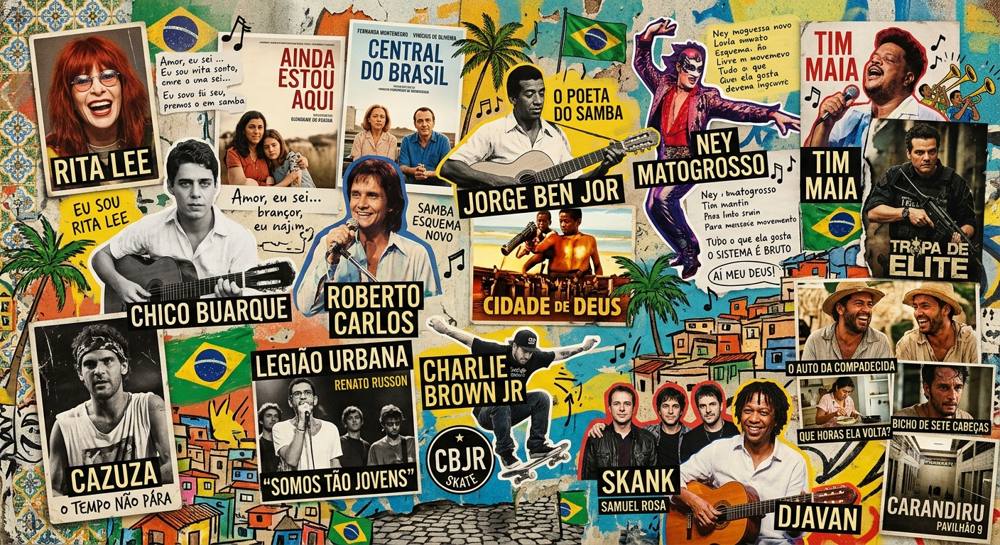

Recomendações de Filmes
Por: Gabrielly S. Arantes
- 1º - Ainda Estou Aqui (2024): Drama biográfico dirigido por Walter Salles que retrata a luta de uma família durante a ditadura militar.
- 2º - Cidade de Deus (2002): Dirigido por Fernando Meirelles e Kátia Lund, indicado a quatro prêmios no Oscar.
- 3º - Tropa de Elite (2007): Dirigido por José Padilha, vencedor do Urso de Ouro no Festival de Berlim.
- 4º - O Auto da Compadecida (2000): Comédia baseada na peça de Ariano Suassuna, muito amada pelo público.
- 5º - Central do Brasil (1998): Drama emocionante de Walter Salles com indicação ao Oscar para Fernanda Montenegro.
- 6º - Que Horas Ela Volta? (2015): Val deixa a filha, Jéssica, no interior de Pernambuco e passa os 13 anos seguintes trabalhando como babá do menino Fabinho em São Paulo. Um filme brasileiro, do gênero drama, escrito e dirigido por Anna Muylaert.
- 7º - Bicho de Sete Cabeças (2001): Filme sobre jovem problemático que se envolve com drogas e más companhias, mas acaba internado no manicômio pelos pais, como solução para seu caso.
- 8º - Bingo: O Rei das Manhãs (2017): Um filme de comédia dramática brasileiro, produzido por Gullane Filmes e distribuído por Warner Bros.
- 9º - Carandiru (2003): Dirigido por Hector Babenco, retrata a rotina, as histórias de vida e a humanidade dos detentos na Casa de Detenção de São Paulo. A narrativa é contada sob o ponto de vista de um médico que trabalha no local e culmina no trágico massacre de 1992.
- 10º - O Agente Secreto (2025): Um filme de drama, suspense e thriller político brasileiro, dirigido e escrito por Kleber Mendonça Filho.